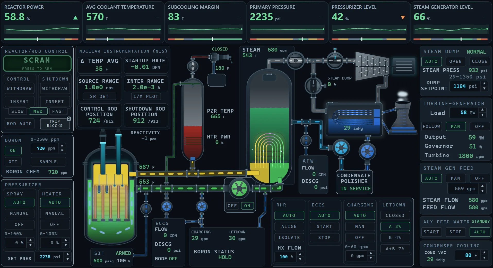
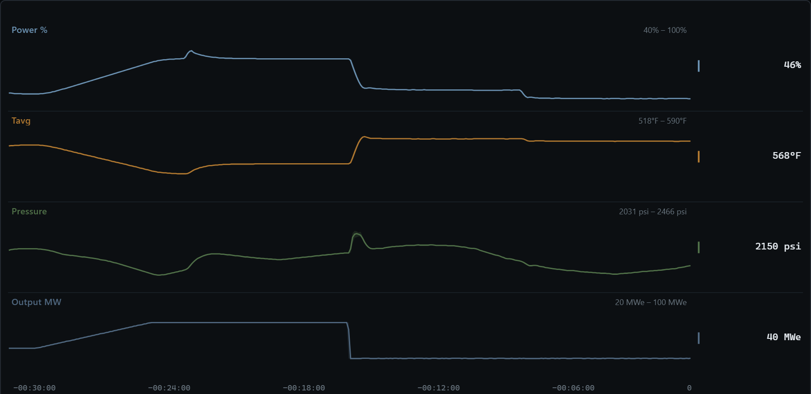

Real reactor physics, with guided walkthroughs that take you from cold shutdown to full power and back right in your browser.
Enter the control room 🧪 PWR2 physics rebuild — dev preview (true values, no instruments)
123 1Core & rods2Pressurizer3Steam generatorFIG. 1 — THE SLS-100 BOARD, AT 59 % POWER
Recorded in the simulator from 50 % power: load 50→75 MWe, rods out 20 steps, load 75→40 MWe, rods in 20 steps. Average coolant temperature (Tavg) falls 24 °F on the way up; pressure spikes to 2302 psi on the way down.

FIG. 2 — STRIP CHART, 30 MIN FROM 50 % POWER
Core, primary, steam generator and turbine are one coupled model, so a load change moves power, coolant temperature and pressure together.
Physics pageTrips, stuck valves, pump trips, tube leaks, loss of heat sink. Inject them and work the recovery.
Casualty proceduresGuided walkthroughs from cold shutdown to full power and back.
Start a walkthrough